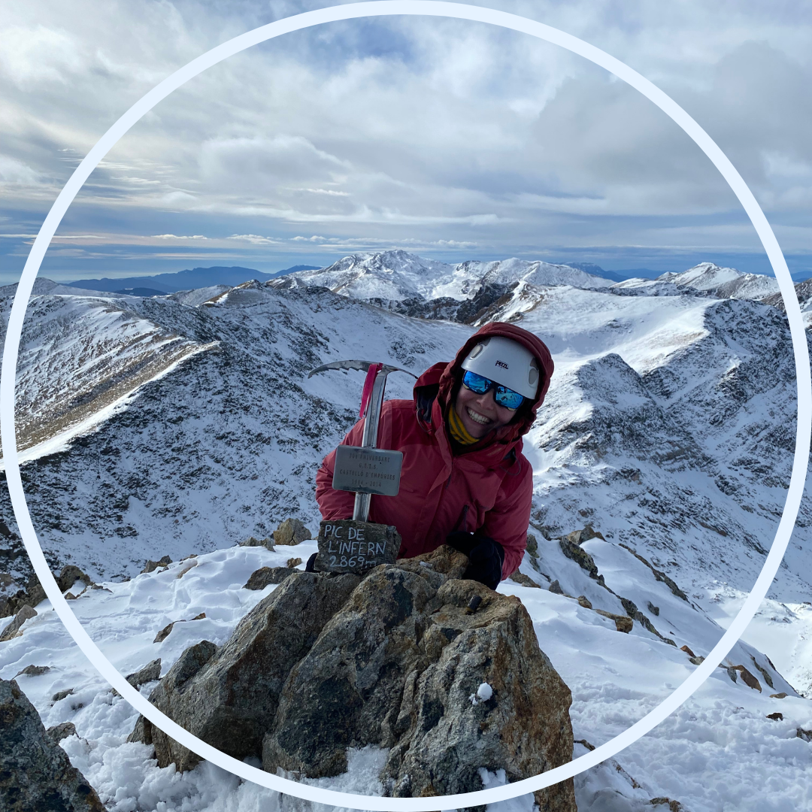
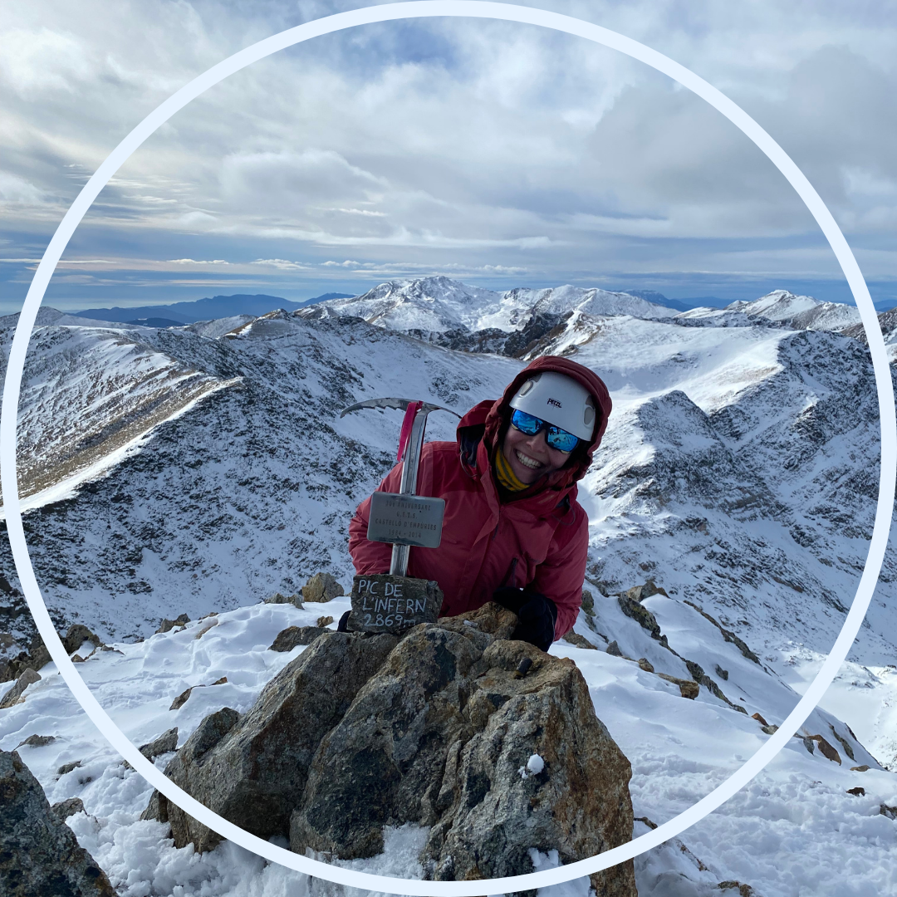

.png) 

Aquí estic, intentant crear la meva primera pàgina web.
Si hagués de triar 3 disciplines serien: senderisme amb grimpades (i satisfacció de fer cim), esquí de muntanya i barrancs secs, d'on neix el "m'ho estic passant molt bé!", potser són les disciplines on més còmode em sento. Gaudeixo molt fent-les, i últimament tinc molts subidons d'adrenalina. Em fa sortir bastant de la zona de confort l'escalda, i una mica les vies ferrades, el barranquisme aquàtic, la muntanya hivernal sense esquís. M'agradaria entrar més en travesses de diversos dies, i repetir espeleologia. I estic molt motivada per començar a fer curses d'orientació. Aquí us deixo alguna de les rutes que he fet amb les meves cròniques!

Soc l'Eva :)
Una tia apassionada per la muntanya i la ciència. Per part de muntanya estic al Centre Excursionista de Catalunya, soc sòcia de fa anys, però fins no fa gaire no m'hi havia implicat molt. Farà cosa d'un any que m'he incorporat al grup de joves, i he descobert un ambient maquíssim. Tant, que m'he motivat a muntar sortides i fer de vocal (que ve a ser voluntària).
També fa poc que he començat a treballar en un àmbit que m'agrada molt, l'educació científica, però no soc profe! Aleshores què soc? Doncs això combinat a organitzar activitats i programes, es converteix en coordinadora de programes científics. A on? A la Fundació Catalunya La Pedrera. Però no deixaré el link perquè podeu buscar vosaltres mateixos què és i què fa aquesta Fundació.
La cosa és que vinc d'un camp on la feina anava molt lligada a la passió i, per tant, a la vida personal. Ara això no és tant així, en part perquè ens hem informat i sabem què és el work-life balance, i en part perquè tinc uns horaris fixos i sé quan és hora de treballar i quan d'acabar la jornada. Així que em trobo entre dues aigües, una part de mi li agrada molt el que faig i n'estic apassionada, però l'altra part de mi té clar que en acabar l'horari de feina no puc fer res relacionat amb això. I, per tant, busco i m'endinso a altres coses que m'omplen. I què m'omple? La muntanya, la natura, els llocs aïllats i solitaris, però sense estar mai sola, encara no he provat això de solotrip.
També tinc molta curiositat i feia temps volia començar el meu blog, però no sabia com, així que avui, divendres vespre (es nota que aquest cap de setmana no marxo d'excursió) m'he motivat a obrir - o intentar- la meva primera pàgina web.
Una de les raons per començar aquest blog és la meva nul·la capacitat de teclejar codi, així que m'he posat com a repte acabar dissenyant una pàgina web. I ja que anava a fer-ho, doncs aprofitar el go i parlar de temes que m'agraden. Aquest motiu està una mica enverinat perquè hi ha un rerefons utilitarista. Veig aquest aprenentatge com una nova habilitat a afegir al meu CV. I em molesta una mica fer les coses per millorar el meu CV, no podem ser simplement persones que ens agrada aprendre coses noves?
L'altre motiu, era buscar una excusa per fer un blog, documentar les meves sortides, viatges, i experiències. Bàsicament parlar de mi i de la fancyfurgo. I com que això és per mi (tot i estar públic) també serà un canal on es podrà veure el meu creixement personal (i potser professional).
El concepte de fancyfurgo va començar fa temps, segurament a una de les primeres sortides que feia amb la furgo cap a Benissa amb els de la uni. I segurament va sortir de la imaginació de la Clau.
Ara fa dos anys em vaig motivar a obrir un compte a Instagram per fer videoblogs de les meves sortides sense saturar el meu compte (em podeu veure a @fancyfurgo a IG). Us preguntareu, quina relació té un compte d'instagram amb una pàgina web? Doncs que soc una tia amb la mentalitat de si es fan les coses, es fan bé, així que amb la Paula Arts @paulaps.art vam dissenyar aquest logo tan guai.
No m'entrava al cap tenir un compte d'instagram predicant la vanlife i somiant que algun dia VW em patrocinaria, sense un logo. Així que vam tenir logo. La idea d'algun dia fer una pàgina web estava allà, i la idea d'algun dia treure'n rendiment econòmic també hi està.
Vaig fer bastants vídeos explicant les sortides, el dia a dia amb la furgo, i demés. Però va arribar un punt que em va fer vergonya continuar fent aquests vídeos perquè havia començat a anar amb gent nova, gent menys instagramer i menys enganxada a les xxss (spoiler alert: gent uuuna mica més gran que jo, gent que no havia passat l'ESO amb instagram). Total, que farà més d'un any que penjo coses puntuals al compte i alguns cops més per experimentar que per cap altra cosa, però, en canvi, he tornat a fer servir el meu compte personal per penjar reviews completes a les stories.
Com veieu això és el meu pati, jo vaig escrivint i potser hi ha cohesió o no, no m'hi fixo gaire. El que m'interessa és deixar plasmada la meva experiència.
Em pots contactar enviant un correu a fancyfurgo@gmail.com o enviant un missatge privat per instagram.